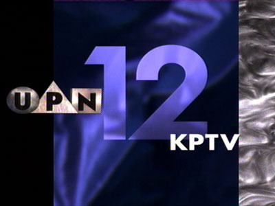

|
KPTV Logos
How KPTV identified itself
on-the-air and in print.
|
|
1952
The original logo,
used during the earliest days of broadcasting. Obviously hand-drawn, it
represented the hard-work of the employees who got the station
up-and-running just weeks after tower construction began. |
|
|
1952
The mountain theme
is used again, in this early identification. |
|
|
1953
KPTV proudly
displayed its affiliation with the NBC network, in this logo used
primarily in print advertising. |
|
|
1953
This
KPTV
identification
featured
a
scene
of
Portland's
St.
Johns
Bridge
and
Willamette
River,
looking
to
the
east. |
|
|
1953
Another
early
logo,
featuring
a
rose
for
Portland,
"The
City
of
Roses." |
 |
1954
Another logo, used
mainly in print. |
|
|
1956
When KPTV was
purchased by Storer Broadcasting in 1954, the logo was adjusted for
letterhead paper, but not so much in print ads. |
|
|
1957
After KPTV and KLOR
merged in 1957, KPTV took over the channel 12 designation, and this logo
appeared in print ads, complete with the NBC chimes. |
|
|
1961
This logo, used in
print advertising, utilized the "a" from the ABC network, of
which KPTV was an affiliate. |
|
|
1962
Ushering in the era
of satellites, KPTV welcomed the arrival of a global reach, with this
logo. |
 |
1962
The actual on-the-air version of the logo, used at the end of station
promos. |
|
|
1964
As an ABC
affiliate, KPTV used this logo.
|
|
|
1964
Following the loss of the ABC affiliation in March 1964, KPTV used the
slogan "just the ticket" to highlight its many theatrical
movies, which were used effectively as counter-programming to network
shows. |
|
|
1965
This probably would not fly in today's politically-correct environment,
but in the 1960s, it gave KPTV a strong identity with the pioneer spirit
of the Northwest. |
|
|
1967
Another native-American-based theme, used in conjunction with the
station's slogan, "The Northwest Personality Station." |
|
|
1967
This
logo
also
identified
KPTV
station
owner
Chris-Craft
Industires,
Inc. |
|
|
1968
Same logo as above, but without the headdress, used as the 1960s came to a
close. |
|
|
1970
A new logo for a new decade, more compact, with bolder call-letter
identification. |
|
|
1972
Another treatment of the same logo.
|
|
|
1973
The same logo used for station (and ownership) identification. |
|
|
1975
The diagonal 12s were often animated, to look as if they were moving up
across the screen. However, the large layout of the design also managed to
cut off most of the picture in on-air promotions, and it was abandoned a
year later. |
|
|
1976
One of KPTV's most popular and longest-lasting designs, the 12 would
appear in various incarnations for the next two decades. |
|
|
1978
A new slogan and theme song, "Your Best Choice," announced
KPTV's aquisition of some very popular syndicated and off-network programs
during the late 1970s. |
|
|
1980
After
the
"Your
Best
Choice"
slogan
had
run
its
course,
KPTV
continued
to
use
the
logo
design
for
several
more
years. |
|
|
1984
With the introduction of computer animation, KPTV's logos began to take on
a 3-dimensional quality, in this logo from the early 1980s. |
|
|
1988
Another treatment with a similar idea.
|
|
|
1993
The 12 remained in this version, but the font used for the call letters
and legal identification took on a bolder, clearer appearance.
|
|
|
1993
The on-air version
of the same logo had a 3-dimensional quality to it, and was used in
conjunction with movie opens.
|
|
|
1995
This
logo
began
its
short
life
on
January
16,
1995,
the
day
the
United
Paramount
Network
premiered
on
KPTV.
The
network
wanted
all
of
its
affiliates
to
change
over
to
a
new
look
at
8pm,
when
"Star
Trek
Voyager"
premiered.
However,
KPTV
started
using
the
new
look
that
morning. |
|
 |
1995
Another
treatment
of
the
same
logo,
used
during
the
same
time
period. |
 |
1995
As KPTV joined the ranks of affiliates for the United Paramount Network,
this logo appeared in print ads.
|
|
|
1995
On-air identification that appeared in the fall of 1995. The design of the
"12" and "UPN" symbols would be used for the neon sign
in the tower of KPTV's new East Portland building. |
|
|
1996
A move to a new building also brought a new commitment to local viewers.
KPTV worked to identify itself with Oregon viewers, producing several
local shows and public service messages, with the brand "Oregon's
12." |
|
|
1997
The
"Oregon's
12"
logo
as
used
for
an
on-air
station
identification. |
|
|
1998
In
its
early
usage,
The
"Oregon's
12"
logo
often
appeared
without
the
"KPTV,"
unless
a
legal
station
identification
was
necessary.
Later,
the
"KPTV"
as
added
for
all
occasions,
to
reinforce
the
brand
with
viewers.
On
air,
the
station
was
referred
to
as
"KPTV
Oregon's
12." |
|
|
2002
Prior to KPTV being
acquired by Meredith Corporation, when it was owned by NewsCorp., this
logo was created, with the expectation that KPTV would become an affiliate
of the Fox network. The logo incorporated some of the style of the
Oregon's 12, along with the Fox logo, but was never used.
|
BACK
TO
SCRAPBOOK

This
page
last
updated
on
August 17, 2025
|
|
| |